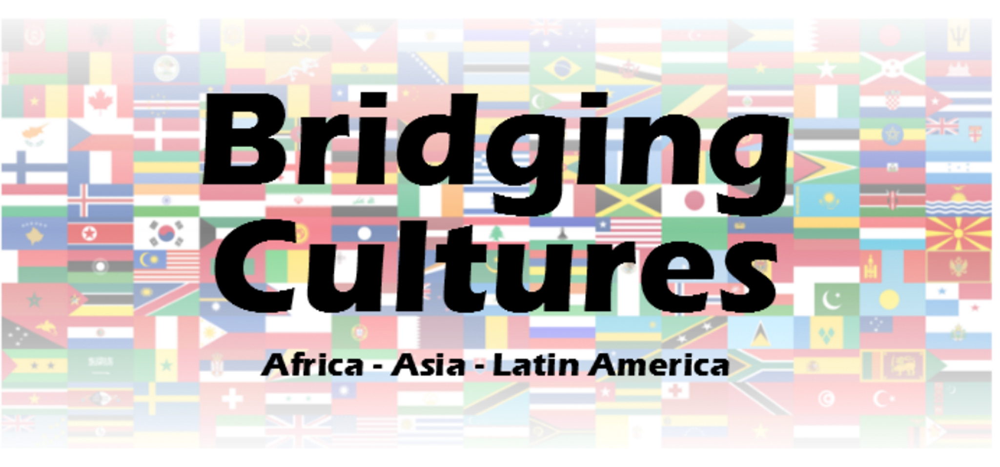

| ACCUEIL |
NOUVELLES |
QUI NOUS SOMMES |
NOTRE TRAVAIL |
NOUS SOUTENIR |
MEDIAS |
PARTENAIRES |
CONTACT |


Bridging Cultures est un « programme global d’éducation aux cultures », avec le but principal de promouvoir les relations interculturelles et de sensibiliser les étudiants de Berlin sur les problèmes de développement auxquels font face les pays en voie de développement. En présentant aux étudiants diverses cultures et idées, nous espérons les doter d’un savoir qui les fera sortir des sentiers battus, et les faire résoudre les problèmes internationaux.
A´ travers des ateliers hebdomadaires, les élèves auront l’opportunité de découvrir diverses contrées du monde, notamment les trois continents en développement que sont l’Asie, l’Afrique et l’Amérique du Sud. Le mot clé du 21ème siècle est le « changement » et nous espérons que le changement arrivera à un niveau fondamental en instruisant dès le plus jeune âge les jeunes afin qu’ils aient une image plus complète du monde d’aujourd’hui et que cela les motive à devenir acteur du changement et agissent pour avoir un impact positif.
Les élèves auront l’opportunité d’analyser les divers « Objectifs du Millénaire pour le Développement » et de voir comment ces buts se mettent en place graduellement dans divers continents. Les ateliers ne se limitent pas à présenter et à expliciter les problèmes, mais aussi à stimuler de façon ludique les esprits des étudiants dans afin qu’ils soient capables de contribuer à ces importantes problématiques globales.
Les ateliers mettront en valeur les différents aspects des cultures de chaque continent, tels que la musique, la nourriture, les tenues vestimentaires, les religions, les sports etc. Les animateurs gérant ces ateliers, viennent de diverses régions du monde, insufflent de nouvelles perspectives, éveillant ainsi le sens critique des étudiants, discutant des affaires en cours dans les pays en voie de développement, et encourageant d’autant plus les étudiants à livrer leurs solutions sur des problèmes réels. Tout ce programme est présenté en langue anglaise.
Si vous représentez une école proche de Berlin ou si un animateur international veut s’investir dans cette initiative, contactez-nous à info@hope-found.org ou appelez l’équipe en charge du projet au: 00493029007192.